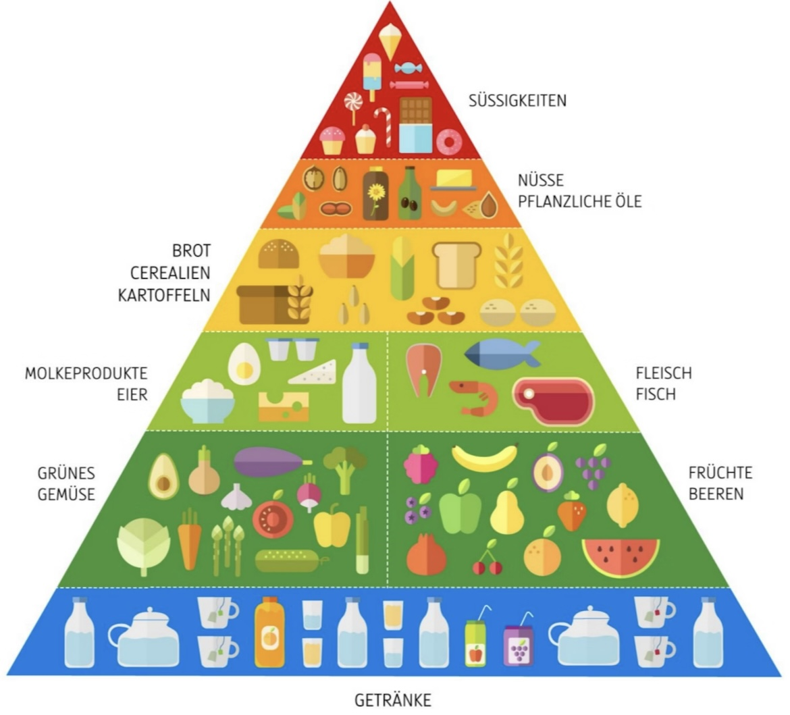

Ungesunde Ernährung bedeutet, dass man über einen längeren Zeitraum viele Lebensmittel isst, die dem Körper schaden. Dazu gehören vor allem Fast Food, Süßigkeiten, Chips, Fertigprodukte und Softdrinks.

Diese Produkte enthalten oft sehr viel Zucker und Fett, liefern aber kaum Vitamine, Mineralstoffe oder Ballaststoffe. Der Körper bekommt zwar viel Energie, aber nicht die Stoffe, die er wirklich braucht.

Besonders problematisch ist ein hoher Zuckerkonsum, da er das Hungergefühl stören kann. Man hat schneller wieder Hunger und isst insgesamt mehr.
